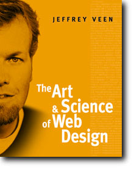

|

The Art & Science Buy Online and Save You can save a bunch of money by shopping online at Amazon.com. Click the button below to buy this book for only $34.99 -- that's over 20 percent off the list price.
The reviews are in... WebReference.com Managing Editor Andy King calls the book "outstanding", saying "The rare few who stretch beyond their comfort zones ... can become design masters. Jeffrey Veen is such a person." Read more... Also, read the interview I did with Andy at WebReference.com... |
This isn't just another Web design book When I set out to write a book about Web design, I wanted to do something different than all the other books out there. I didn't want to write a reference manual for a Web technology. Nor did I want to write a step-by-step tutorial or design tips and tricks. This book is a guide to help you think like a Web designer. It offers solutions to the problems we face every day on the Web. And it will give you the foundation you need to create smart and effective sites. Here's what you'll learn:
|
|
About the Author Jeffrey Veen is an internationally sought-after speaker, author and user experience consultant. For six years he served as the Executive Interface Director for Wired Digital and Lycos Inc., managing the look and feel of HotWired, the HotBot search engine, Wired News and others. In addition to lecturing and writing on Web design and development, Jeffrey has been active with the World Wide Web Consortium as an invited expert on electronic publishing. He is also a columnist for Webmonkey, the author of "HotWired Style: Principles for Building Smart Web Sites". In 1998, Jeffrey was named by CNet as one of the "First Annual Web Innovators". | |